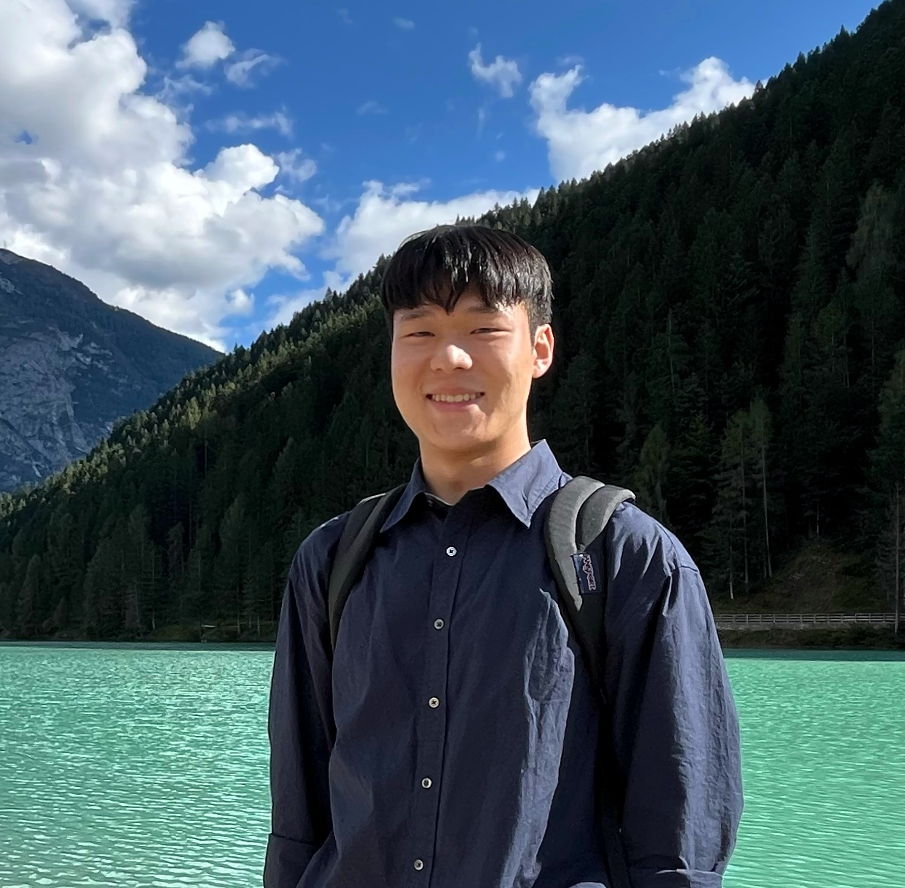

|
Dohyun Kim I am a research officer at the Defense AI Center of the Agency for Defense Development (ADD), where I researched (robot learning, tbc). My research focuses on (tbc). Before joining ADD, I was a research intern at 3D Vision Lab, SNU, advised by Prof. Youngmin Kim, where I researched humanoid and quadruped reinforcement learning utilizing motion priors. I completed my bachelor's degree (Summa Cum Laude) in Electrical and Computer Engineering at the Seoul National University (SNU). |
 |
{kind=link}
ResearchI'm interested in robotics, reinforcement learning, and generalized humanoid. Most of my research is about (tbc). |

|
Generative Multiview Relighting for
3D Reconstruction under Extreme Illumination Variation
Hadi Alzayer, Philipp Henzler, Jonathan T. Barron, Jia-Bin Huang, Pratul P. Srinivasan, Dor Verbin arXiv, 2024 project page / arXiv Images taken under extreme illumination variation can be made consistent with diffusion, and this enables high-quality 3D reconstruction. |

|
Cleaning the USNO-B Catalog Through Automatic Detection of Optical Artifacts
Jonathan T. Barron, Christopher Stumm, David W. Hogg, Dustin Lang, Sam Roweis The Astronomical Journal, 135, 2008 We use computer vision techniques to identify and remove diffraction spikes and reflection halos in the USNO-B Catalog. In use at Astrometry.net |
Projects |
|
|
Cleaning the USNO-B Catalog Through Automatic Detection of Optical Artifacts
Jonathan T. Barron, Christopher Stumm, David W. Hogg, Dustin Lang, Sam Roweis The Astronomical Journal, 135, 2008 We use computer vision techniques to identify and remove diffraction spikes and reflection halos in the USNO-B Catalog. In use at Astrometry.net |
Micropapers |
Squareplus: A Softplus-Like Algebraic Rectifier
A Convenient Generalization of Schlick's Bias and Gain Functions Continuously Differentiable Exponential Linear Units Scholars & Big Models: How Can Academics Adapt? |
|
template adapted from JonBarron. |